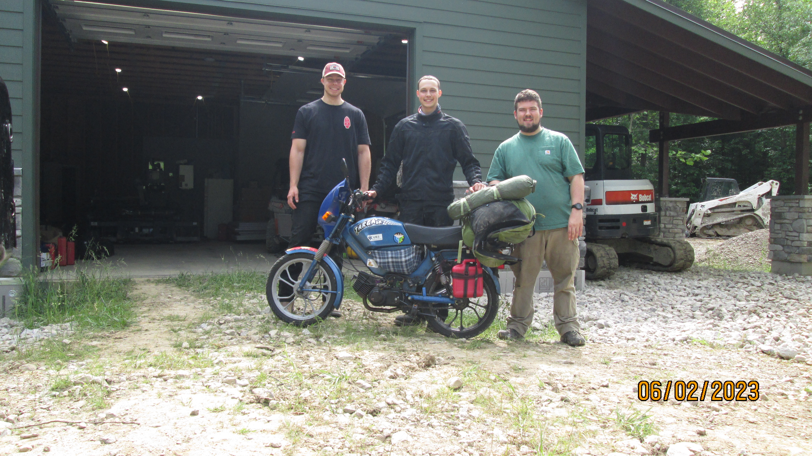
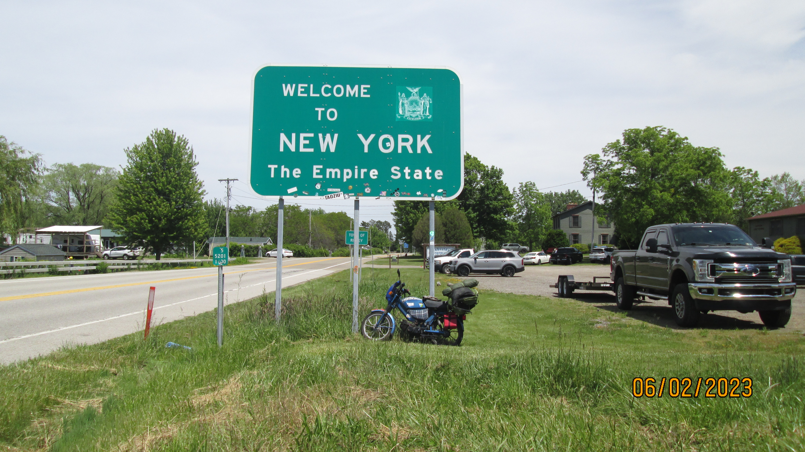
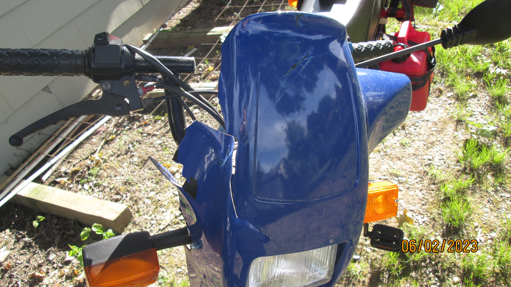
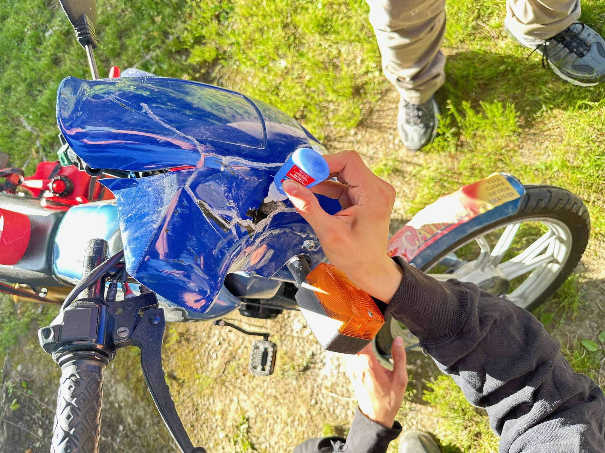
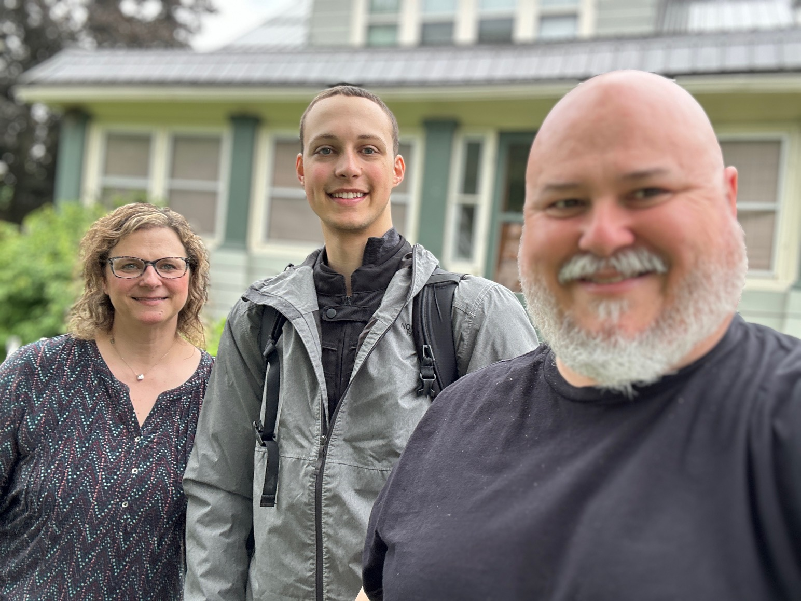
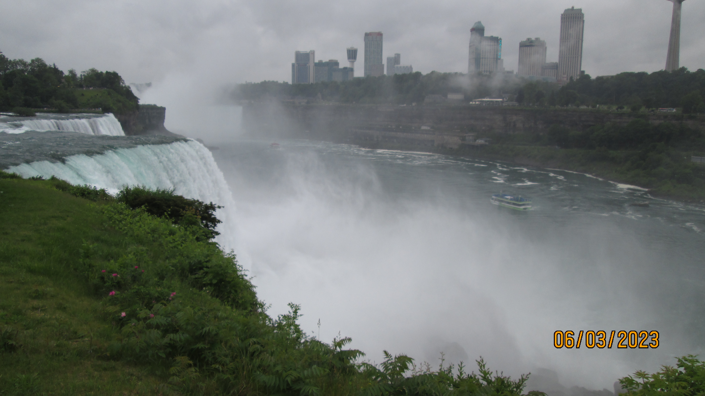
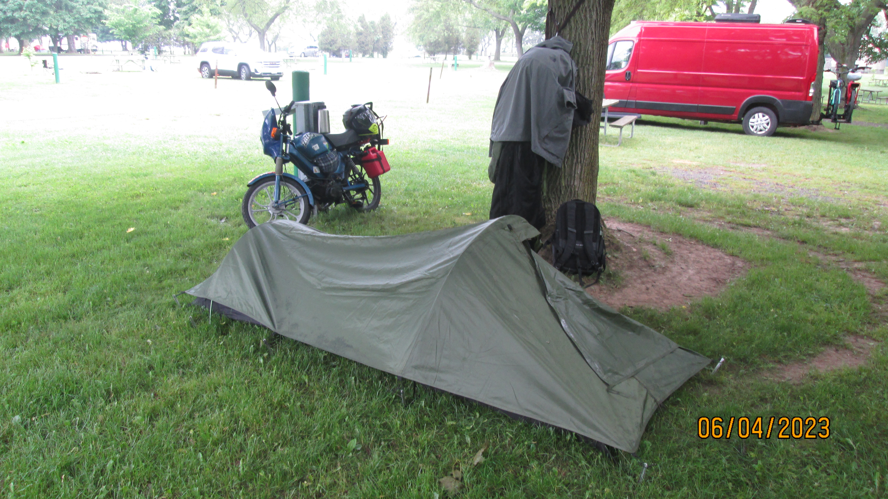
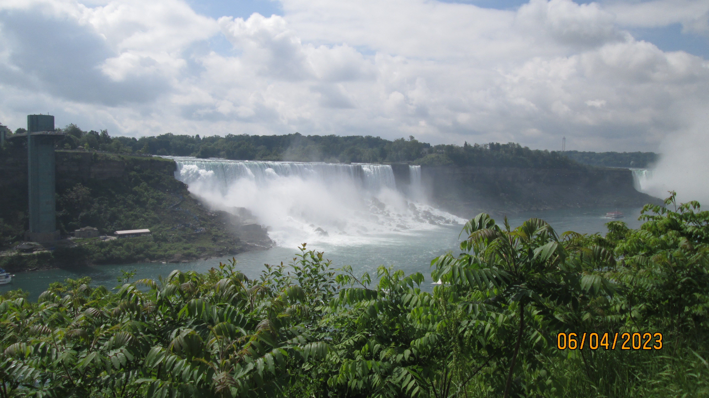

Traveling across the US (and parts of Canada) on my 1999 Tomos Targa LX Moped.
Trip Stats:
Total Days: 6
Total Miles Traveled: ~375 miles
Days without Shower: 4
Breakdowns: 0
Gallons of Gas Purchased: 2.95 gallons
Cleveland, OH to Ashtabula, OH
I left Cleveland on Friday May 31st at 3:30 pm after getting a buzz cut in the morning. I headed towards my friend Angelo's place to do some last minute welding on my speedometer/odometer cable. After some successful sketchy welding, I headed towards Angelo's property out in Ashtabula to camp the night. It tooks about 2+ hours of driving to cover ~60 miles. Adam came up from Pittsburgh to grill and hang out for the night. Ian also came out for a bit and then left to head out to Michigan the next day. This first day didn't feel like the trip had started since I've already driven the moped out to Ashtabula before. The next morning we went out to breakfast at a local restaurant and then I packed up my stuff and headed out around 11 am.
Ashtabula, OH to Silver Creek, NY
My next stop was visiting my Dad's childhood friend Phil in Silver Creek, NY just outside of Buffalo. I stayed on highway 5 along Lake Erie for most of the drive, this day was about 80 miles of driving. The weather was decent and the lake kept things cool most of the ride.
I decided it would be a good idea to take a photo next to the "Welcome to New York" sign. I propped the bike up on its center stand in front of the sign but right as I was walking backwards to take the photo it fell over. The brand new front fairing I had just installed was completely cracked and ruined.
Thanks to Phil and some of his superglue techniques (superglue + baking soda) we were able to reassemble it back together.
Staying with Phil and his family was great, I got to hear some great stories about him and my dad growing up in Ohio.
The next morning it started to rain and was supposed to rain most of the day. We went to a family restaurant for breakfast and I got on the road around 10.
Silver Creek, NY to Niagara Falls
Surpisingly engough the rain let up until I made it to Niagara Falls. It was mostly light showers the rest of the day as I made my way up to a campsite up North. This day was the longest stretch yet and was just under 100 miles of travel.
I made it to the campground North of Niagara Falls and tried to pick a campsite with a nice tree to sit under until the rain would let up. While sitting under the tree a guy came up to me and offered a place to sit under his RV. I took him up on the offer and we ended up chatting for quite a bit. Henry, the RV guy, grew up in Pennsylvania splitting Erie and Pittsburgh. Henry had recently retired was on his first RV trip of the season with his wife Taty. When the rain let up I set up my camp for the night and ate some Trader Joe's Ramen and a freeze dried chili bean meal. I ended up going back over to Henry's RV later that night for a fire.
The next morning I packed up camp and got on the road around 10 am to make the journey into Canada. Before leaving I briefly met Tony and Denise, a couple camping at the campsite next to mine (the red van). Tony worked at Northrup Gruman and he and his wife had just moved from Maryland to PA.
Niagara Falls to Toronto
I crossed into Canada at the Rainbow Bridge, the border patrol agent was very serious and probably very suspicious about my vehicle considering what it looked like. I was able to make it across and stopped on the Canadian side of Niagara Falls, a much better view than the US side. Then I made my way towards Toronto. The journey to Toronto was awful, my moped had been struggling for a while with all the extra load and the clutches were being pushed to the limits. There was one hill coming through the tourist trap town in Niagara where the bike almost stalled out and I could smell the clutches burning. Tourists were staring as I made my way up the hill at speeds less than 10 mph while producing well over 100 decibels of noise. After getting out of Niagara, I took highway 20 north most of the way towards Toronto. I hit the Greater Toronto Area right around rush hour which was a mistake. Toronto drivers are terrible. The stop and start traffic was pushing the first gear clutch pretty hard and I had to limp along in the bike lanes especially up any sort of incline. After 3ish hours of Toronto city driving I finally made it to my destination. Niagara to Toronto was my longest day yet traveling over 120 miles. The 30 mph top speed of the moped and lack of power is really making me wish I had a motorcyle. For the next week I'll be staying in Toronto with family friends that we lived with in Califorina.